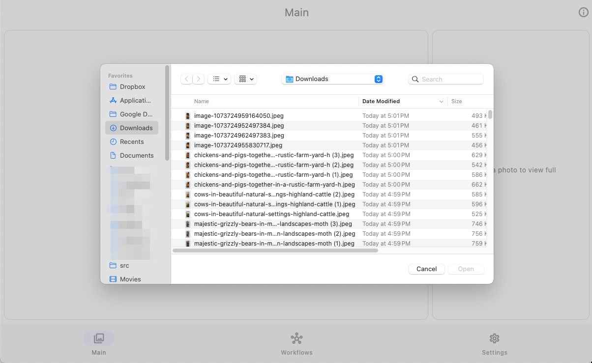
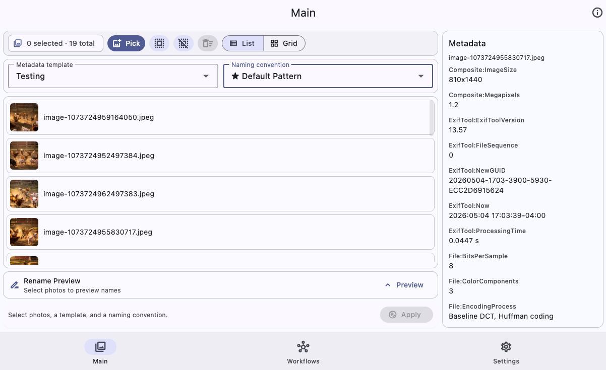
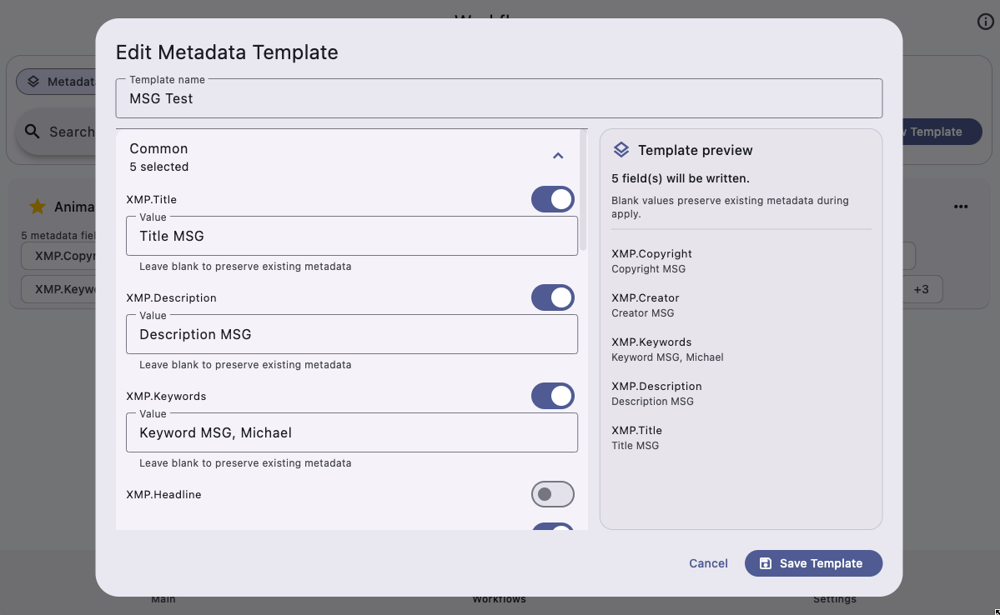
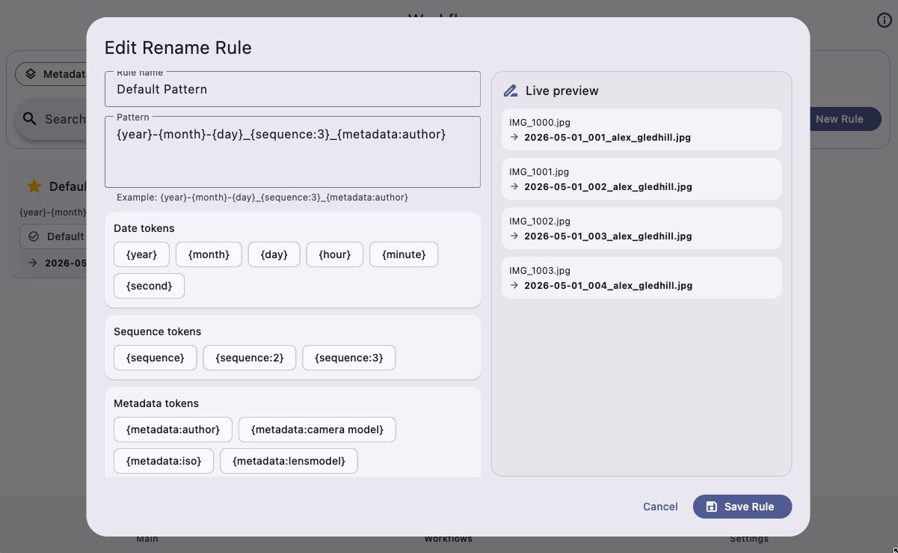

Select All / Unselect All
Use the toolbar buttons or your configured keyboard shortcuts to quickly control the current batch.
Visual User Guide
This guide uses real app screenshots to walk through importing photos, selecting views, creating workflows, previewing names, applying changes, and configuring settings.
Step 1
The Main screen is the command center for day-to-day work. Before any photos are loaded, the app gives you a clean drop zone and a Pick Photos button.

Step 2
Clicking Pick Photos opens the native picker for your platform. Select one or more image files, then open them into the workspace.

Step 3
After loading photos, use either Grid view or List view. Both views support selection, focusing a photo to inspect metadata, and removing selected files from the current batch.


Use the toolbar buttons or your configured keyboard shortcuts to quickly control the current batch.
In Grid view, use the small thumbnail slider to choose one of five sizes from Small to Large.
Step 4
The rename preview shows how selected files will be named after applying the chosen naming convention. This is the final checkpoint before changing files.

Step 5
The Workflows page stores reusable metadata templates. Templates let you apply consistent title, description, keyword, headline, creator, and copyright information across selected photos.


Step 6
Naming conventions control how selected photos are renamed. A good naming pattern usually combines date, title or metadata values, and a sequence token.


Include a sequence token to avoid duplicate output names during batch work.
Use the three-dot menu on a template or rule to make it the default workflow.
Step 7
The Settings page keeps your preferred defaults and quality-of-life options in one place.

Final checklist
Before clicking Apply, pause for a quick review. The app is designed to make batch work fast, but file changes should still be intentional.
Only selected photos are changed. Use Select All or Unselect All if the batch is not right.
Confirm the metadata template matches the shoot, client, or archive workflow.
Review the naming convention and check the preview for duplicates or unexpected text.
Use the Apply confirmation dialog as your final “yes, do this” moment.
Follow the full walkthrough in video format for a start-to-finish demonstration.
Watch more tutorials on my YouTube channel
Open YouTube Channel